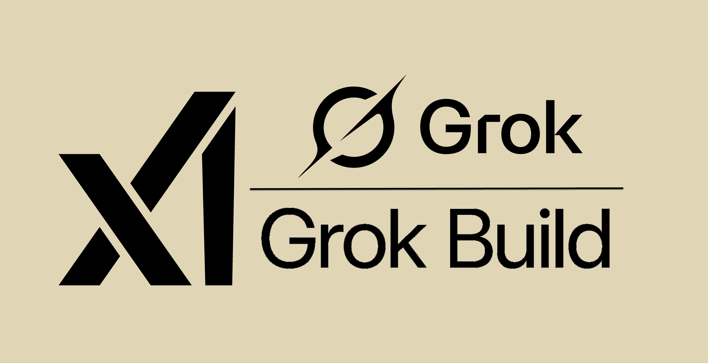

Production-grade skills, custom MCP servers, and real projects.

HEADER IMAGE • GROK BUILD ARSENAL
Most demos are toys. This arsenal ships real, production-minded projects + the exact reusable skills and MCPs that made them possible — all created with Grok Build 0.1 itself.
Full self-hosted dashboard + CLI for analyzing AI agent sessions across Grok Build, Claude Code, Cursor and more.
Interactive runner for parallel subagents with scoring, synthesis, and cost tracking.
Polished control plane for discovering, installing, validating, and monitoring MCP servers + skills.
Test selection, impact analysis, flakiness detection, and coverage-guided editing at scale.
Copy these into any .grok/skills/ folder. They are narrowly scoped with excellent auto-invocation descriptions.
Narrowly-focused, agent-optimized MCP servers. The highest-leverage additions for grok-build-0.1.
Ingest, classify, fingerprint, and visualize agent sessions. Full failure taxonomy + reports.
Rich architecture and dependency graphs. Identifies boundaries and hotspots.
Smart test selection, flakiness detection, impact analysis, and coverage guidance.
Visual + accessibility QA during UI work. Self-validation for the skill/MCP ecosystem.